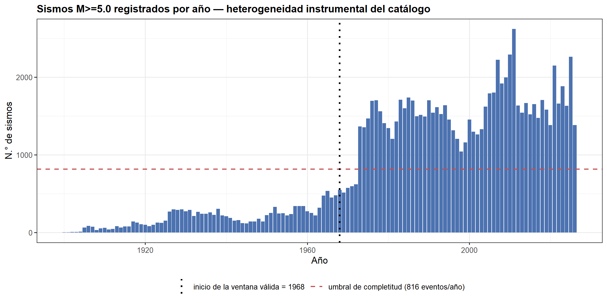

5 5. Limpieza y preparación de datos
5.1 5.1 Limpieza y control de calidad del catálogo
# `time` y `updated` pueden venir como milisegundos Unix o como texto ISO 8601
a_fecha_hora <- function(x) {
if (inherits(x, "POSIXct")) return(with_tz(x, "UTC"))
if (is.numeric(x)) return(as.POSIXct(x / 1000, origin = "1970-01-01", tz = "UTC"))
r <- suppressWarnings(ymd_hms(x, tz = "UTC", quiet = TRUE))
faltan <- is.na(r) & !is.na(x)
if (any(faltan)) r[faltan] <- suppressWarnings(ymd(x[faltan], tz = "UTC", quiet = TRUE))
r
}
df <- df_raw %>%
mutate(across(any_of(c("time", "updated")), a_fecha_hora),
across(c(latitude, longitude, depth, mag), ~ suppressWarnings(as.numeric(.x))))
n0 <- nrow(df)
reporte_limpieza <- list()
# Aplica un filtro y registra cuántas filas cuesta
paso <- function(nombre, df_nuevo) {
reporte_limpieza[[length(reporte_limpieza) + 1]] <<- tibble(
paso = nombre, filas = nrow(df_nuevo), eliminadas = nrow(df) - nrow(df_nuevo))
df <<- df_nuevo
invisible(df_nuevo)
}
paso("dataset crudo", df)
paso("time válido", df %>% filter(!is.na(time)))
paso("solo type == 'earthquake'", df %>% filter(tolower(as.character(type)) == "earthquake"))
paso("id único", df %>% distinct(id, .keep_all = TRUE))
paso("duplicados espacio-temporales",
df %>% distinct(time, latitude, longitude, mag, .keep_all = TRUE))
paso("coordenadas válidas",
df %>% filter(between(latitude, -90, 90), between(longitude, -180, 180)))
paso("magnitud >= 5.0", df %>% filter(mag >= 5.0))
paso("profundidad en [-5, 700] km o nula",
df %>% filter(is.na(depth) | between(depth, -5, 700)))
tabla_limpieza <- bind_rows(reporte_limpieza) %>%
mutate(pct_retenido = round(filas / n0 * 100, 2))
kab(tabla_limpieza)| paso | filas | eliminadas | pct_retenido |
|---|---|---|---|
| dataset crudo | 115,493 | 0 | 100.00 |
| time válido | 115,493 | 0 | 100.00 |
| solo type == ‘earthquake’ | 115,001 | 492 | 99.57 |
| id único | 102,307 | 12,694 | 88.58 |
| duplicados espacio-temporales | 102,306 | 1 | 88.58 |
| coordenadas válidas | 102,306 | 0 | 88.58 |
| magnitud >= 5.0 | 102,306 | 0 | 88.58 |
| profundidad en [-5, 700] km o nula | 102,306 | 0 | 88.58 |
5.2 5.2 Magnitud de completitud (\(M_c\)) y ventana temporal válida
df <- df %>% mutate(anio = year(time))
conteo_anual <- df %>% count(anio, name = "n") %>% arrange(anio)
# Criterio objetivo: primer año a partir del cual el conteo se mantiene (>90% de los años)
# por encima del 50% del nivel instrumental moderno (mediana de los últimos 30 años)
nivel_moderno <- median(conteo_anual$n[conteo_anual$anio >= max(conteo_anual$anio) - 30])
umbral <- 0.5 * nivel_moderno
cumple <- sapply(conteo_anual$anio, function(a) {
mean(conteo_anual$n[conteo_anual$anio >= a] >= umbral) > 0.90
})
candidatos <- conteo_anual$anio[cumple]
ANIO_INICIO <- if (length(candidatos)) as.integer(min(candidatos)) else 1973L
lab_umbral <- sprintf("umbral de completitud (%.0f eventos/año)", umbral)
lab_inicio <- paste0("inicio de la ventana válida = ", ANIO_INICIO)
ggplot(conteo_anual, aes(anio, n)) +
geom_col(fill = AZUL, width = 0.9) +
geom_hline(aes(yintercept = umbral, color = lab_umbral), linetype = "dashed", linewidth = 0.7) +
geom_vline(aes(xintercept = ANIO_INICIO, color = lab_inicio), linetype = "dotted", linewidth = 1) +
scale_color_manual(values = setNames(c(ROJO, "black"), c(lab_umbral, lab_inicio)), name = NULL) +
labs(title = "Sismos M>=5.0 registrados por año — heterogeneidad instrumental del catálogo",
x = "Año", y = "N.° de sismos")
antes <- max(c(median(conteo_anual$n[conteo_anual$anio < ANIO_INICIO]), 1), na.rm = TRUE)
despues <- median(conteo_anual$n[conteo_anual$anio >= ANIO_INICIO])La mediana anual de sismos fue de 182 antes de 1968 y de 1,542 desde 1968.
ANIO_FIN <- as.integer(max(df$anio))
dfq <- df %>% filter(anio >= ANIO_INICIO) # quality catalog (catálogo de trabajo)Último evento del catálogo: 2026-08-22 17:00:39 UTC. El catálogo de trabajo contiene 89,540 sismos entre 1968 y 2026; se descartaron por completitud 12,766 sismos anteriores a 1968.
5.3 5.3 Ingeniería de variables
Se derivan las variables que la pregunta de investigación necesita y que no existen en el archivo original:
| Variable | Definición | Justificación |
|---|---|---|
mes |
periodo mensual del evento | unidad temporal del panel |
log10_E |
\(1.5\,M + 4.8\) (Hanks & Kanamori, 1979) | la magnitud es logarítmica; la energía es la cantidad física aditiva |
region |
celda de malla de 5°×5° | partición objetiva y exhaustiva del espacio |
region_nombre |
topónimo modal de place en la celda |
interpretabilidad |
rango_prof |
superficial (<70 km), intermedia (70–300), profunda (>300) | clasificación sismológica estándar |
dt_horas |
tiempo transcurrido desde el sismo anterior en la región | diagnóstico de agrupamiento (réplicas) |
PASO_MALLA <- 5
# Topónimo: última parte tras la coma o, si no hay coma, tras " of "
toponimo <- function(s) {
tras_coma <- str_trim(str_extract(s, "[^,]*$"))
tras_of <- str_trim(sub("^.* of ", "", s))
if_else(is.na(s), NA_character_, if_else(str_detect(s, ","), tras_coma, tras_of))
}
CORTES_PROF <- c(-10, 70, 300, 1000)
ETIQ_PROF <- c("Superficial (<70 km)", "Intermedia (70-300 km)", "Profunda (>300 km)")
dfq <- dfq %>%
mutate(mes = as.Date(floor_date(time, "month")),
anio = year(time),
log10_E = 1.5 * mag + 4.8,
lat_bin = as.integer(floor(latitude / PASO_MALLA) * PASO_MALLA),
lon_bin = as.integer(floor(longitude / PASO_MALLA) * PASO_MALLA),
region = paste(lat_bin, lon_bin, sep = "|"),
toponimo = toponimo(place))
# Nombre de cada región = topónimo más frecuente en la celda
nombres <- dfq %>%
filter(!is.na(toponimo)) %>%
count(region, toponimo) %>%
group_by(region) %>%
slice_max(n, n = 1, with_ties = FALSE) %>%
ungroup() %>%
select(region, region_nombre = toponimo)
dfq <- dfq %>%
left_join(nombres, by = "region") %>%
mutate(region_nombre = replace_na(region_nombre, "sin nombre"),
rango_prof = cut(depth, breaks = CORTES_PROF, labels = ETIQ_PROF))
# Tiempo (en horas) desde el sismo anterior de la misma región
dfq <- dfq %>%
arrange(region, time) %>%
group_by(region) %>%
mutate(dt_horas = as.numeric(difftime(time, lag(time), units = "hours"))) %>%
ungroup() %>%
arrange(time)
dfq %>%
select(time, mes, mag, log10_E, depth, rango_prof, region, region_nombre, dt_horas) %>%
head()## # A tibble: 6 × 9
## time mes mag log10_E depth rango_prof region region_nombre dt_horas
## <dttm> <date> <dbl> <dbl> <dbl> <fct> <chr> <chr> <dbl>
## 1 1968-01-02 00:21:12 1968-01-01 5.93 13.7 60 Superficial (<70 km) -10|150 Papua New Guinea NA
## 2 1968-01-02 11:59:32 1968-01-01 5.19 12.6 10 Superficial (<70 km) 25|50 Iran NA
## 3 1968-01-04 00:57:44 1968-01-01 6.13 14.0 26 Superficial (<70 km) 50|-175 Alaska NA
## 4 1968-01-04 10:27:39 1968-01-01 5.75 13.4 15 Superficial (<70 km) -10|145 Papua New Guinea NA
## 5 1968-01-05 06:42:48 1968-01-01 5.26 12.7 19.9 Superficial (<70 km) 30|75 India NA
## 6 1968-01-06 23:27:23 1968-01-01 6.4 14.4 30 Superficial (<70 km) -30|-75 Chile NARegiones (celdas de 5° × 5°) con al menos un sismo: 1038.
5.4 5.4 Gestión de datos faltantes
| Variable | % faltante | Mecanismo | Decisión |
|---|---|---|---|
nst, gap, dmin, horizontalError, magError, magNst, depthError, rms |
25–71 % | MNAR (no reportado por redes antiguas) | Eliminar — imputar sesgaría |
depth |
0,25 % | MAR | Imputar |
place |
0,77 % | MCAR | Etiquetar como “desconocido” |
Para elegir la técnica de imputación de depth se enmascara el 5 % de los valores observados y se compara cada técnica contra el valor verdadero.
mask_faltante <- is.na(dfq$depth)
obs_idx <- which(!mask_faltante)
idx_test <- sort(sample(obs_idx, size = round(0.05 * length(obs_idx))))
verdad <- dfq$depth[idx_test]
ensayo <- dfq %>% select(depth, region, time)
ensayo$depth[idx_test] <- NA
med_glob <- median(ensayo$depth, na.rm = TRUE)
media_glob <- mean(ensayo$depth, na.rm = TRUE)
med_por_region <- ensayo %>%
group_by(region) %>%
mutate(m = median(depth, na.rm = TRUE)) %>%
ungroup() %>%
pull(m)
imputaciones <- list(
"Media global" = replace_na(ensayo$depth, media_glob),
"Mediana global" = replace_na(ensayo$depth, med_glob),
"Mediana por region" = coalesce(ensayo$depth, med_por_region),
"Backward fill (bfill)" = tibble(depth = ensayo$depth) %>% fill(depth, .direction = "up") %>% pull(depth),
# R no tiene spline cuadrático en zoo: se usa el spline cúbico (na.spline)
"Interpolacion spline" = as.numeric(na.spline(ensayo$depth, na.rm = FALSE))
)
filas <- imap(imputaciones, function(serie, nombre) {
pred <- serie[idx_test]
pred[is.na(pred)] <- med_glob
tibble(Tecnica = nombre,
MAE = mean(abs(pred - verdad)),
RMSE = sqrt(mean((pred - verdad)^2)),
Sesgo_medio = mean(pred - verdad),
Cambio_sd_pct = (sd0(pred) / sd0(verdad) - 1) * 100)
})
comparacion <- bind_rows(filas) %>%
arrange(RMSE) %>%
mutate(across(where(is.numeric), ~ round(.x, 3)),
preserva_dispersion = abs(Cambio_sd_pct) <= 25)
admisibles <- comparacion %>% filter(preserva_dispersion)
TECNICA_ELEGIDA <- if (nrow(admisibles)) admisibles$Tecnica[1] else "Mediana por region"
kab(comparacion)| Tecnica | MAE | RMSE | Sesgo_medio | Cambio_sd_pct | preserva_dispersion |
|---|---|---|---|---|---|
| Mediana por region | 38.019 | 87.019 | -9.690 | -19.582 | TRUE |
| Media global | 65.202 | 117.454 | -1.528 | -100.000 | FALSE |
| Mediana global | 50.964 | 122.579 | -35.109 | -100.000 | FALSE |
| Backward fill (bfill) | 74.190 | 151.946 | -5.209 | -10.752 | TRUE |
| Interpolacion spline | 97.411 | 163.649 | -5.373 | 4.174 | TRUE |
ganadora_rmse <- comparacion$Tecnica[1]
delta_media <- comparacion$Cambio_sd_pct[comparacion$Tecnica == "Media global"]Faltantes reales en depth: 1 (0.001 %). La técnica con menor RMSE fue Mediana por region; la imputación por media global altera la desviación estándar en -100.0 %, por lo que degrada la dispersión de la variable. Entre las técnicas que preservan la dispersión (cambio en la desviación estándar de ±25 % o menos) se elige Mediana por region.
COLS_DESCARTE <- c("nst", "gap", "dmin", "rms", "horizontalError",
"depthError", "magError", "magNst")
dfq$depth <- switch(
TECNICA_ELEGIDA,
"Media global" = replace_na(dfq$depth, mean(dfq$depth, na.rm = TRUE)),
"Mediana global" = replace_na(dfq$depth, median(dfq$depth, na.rm = TRUE)),
"Backward fill (bfill)" = tibble(depth = dfq$depth) %>% fill(depth, .direction = "up") %>% pull(depth),
"Interpolacion spline" = as.numeric(na.spline(dfq$depth, na.rm = FALSE)),
# Mediana por región (opción por defecto)
{
m_reg <- dfq %>% group_by(region) %>% mutate(m = median(depth, na.rm = TRUE)) %>% ungroup() %>% pull(m)
coalesce(dfq$depth, m_reg)
}
)
dfq$depth <- replace_na(dfq$depth, median(dfq$depth, na.rm = TRUE)) # red de seguridad
dfq$place <- replace_na(dfq$place, "desconocido")
dfq$rango_prof <- cut(dfq$depth, breaks = CORTES_PROF, labels = ETIQ_PROF)
dfm <- dfq %>% select(-any_of(COLS_DESCARTE)) # dataset de modelado
VARS_MODELADO <- c("time", "latitude", "longitude", "depth", "mag", "log10_E",
"region", "mes", "rango_prof")
pendientes <- colSums(is.na(dfm[VARS_MODELADO]))
pendientes <- pendientes[pendientes > 0]Técnica de imputación aplicada a depth: Mediana por region.
Faltantes remanentes en las variables de modelado: ninguno — el dataset de modelado está completo.
Nota: dt_horas conserva un NA por región (el primer sismo de cada región no tiene evento previo). Es un faltante estructural, no un dato perdido: no se imputa.
Dimensiones del dataset de modelado: 89,540 filas × 25 columnas.
5.5 5.5 Construcción del panel región × mes
El catálogo es una lista de eventos; el modelo de Poisson necesita conteos por unidad de tiempo y espacio. Se construye la rejilla completa, incluyendo explícitamente los meses con cero sismos: omitirlos sesgaría la tasa histórica hacia arriba y haría que casi ninguna región pareciera anómala.
# Solo regiones con actividad suficiente para hacer inferencia
MIN_EVENTOS_REGION <- 60
regiones_validas <- dfm %>% count(region) %>% filter(n >= MIN_EVENTOS_REGION) %>% pull(region)
panel_base <- dfm %>% filter(region %in% regiones_validas)
# Rejilla completa región x mes (incluye los ceros)
meses <- seq(min(panel_base$mes), max(panel_base$mes), by = "month")
malla <- expand_grid(region = regiones_validas, mes = meses)
agregado <- panel_base %>%
group_by(region, mes) %>%
summarise(n_eventos = n(),
mag_max = max(mag),
mag_media = mean(mag),
prof_media = mean(depth),
log10_E_total = log10(sum(10^log10_E)),
.groups = "drop")
panel <- malla %>%
left_join(agregado, by = c("region", "mes")) %>%
mutate(n_eventos = replace_na(n_eventos, 0L)) %>%
left_join(nombres, by = "region") %>%
mutate(region_nombre = replace_na(region_nombre, "sin nombre"),
fecha = mes,
region_label = paste0(region_nombre, " [", region, "]"))
head(panel)## # A tibble: 6 × 10
## region mes n_eventos mag_max mag_media prof_media log10_E_total region_nombre fecha region_label
## <chr> <date> <int> <dbl> <dbl> <dbl> <dbl> <chr> <date> <chr>
## 1 -10|-110 1968-01-01 0 NA NA NA NA central East Pacific Rise 1968-01-01 central East Pacific Rise [-10…
## 2 -10|-110 1968-02-01 0 NA NA NA NA central East Pacific Rise 1968-02-01 central East Pacific Rise [-10…
## 3 -10|-110 1968-03-01 0 NA NA NA NA central East Pacific Rise 1968-03-01 central East Pacific Rise [-10…
## 4 -10|-110 1968-04-01 0 NA NA NA NA central East Pacific Rise 1968-04-01 central East Pacific Rise [-10…
## 5 -10|-110 1968-05-01 0 NA NA NA NA central East Pacific Rise 1968-05-01 central East Pacific Rise [-10…
## 6 -10|-110 1968-06-01 0 NA NA NA NA central East Pacific Rise 1968-06-01 central East Pacific Rise [-10…Regiones retenidas: 242 de 1038 (criterio: al menos 60 sismos), que cubren el 90.0 % de los eventos del catálogo. El panel tiene 170,368 filas = 242 regiones × 704 meses, y el 76.7 % de sus filas corresponde a meses con cero sismos.
5.6 5.6 División de los datos: 80 % histórico / 20 % reciente
Decisión metodológica crítica: la división NO puede ser aleatoria.
Una partición aleatoria mezclaría meses de 1990 con meses de 2023 en ambos conjuntos, destruyendo el orden temporal y produciendo data leakage: el “histórico” contendría información del futuro. Como la pregunta es explícitamente “reciente vs. histórico”, la división debe ser cronológica:
- 80 % más antiguo → conjunto HISTÓRICO (train): línea base de la que se estiman \(\lambda_r\), el b-value y los límites de control.
- 20 % más reciente → conjunto RECIENTE (test): periodo bajo evaluación, nunca usado para estimar la línea base.
Esta partición cumple el lineamiento 80/20 y define operativamente la pregunta de investigación.
corte_idx <- floor(length(meses) * 0.80)
MES_CORTE <- meses[corte_idx + 1] # primer mes del periodo RECIENTE
panel$periodo <- if_else(panel$mes < MES_CORTE, "HISTORICO", "RECIENTE")
dfm$periodo <- if_else(dfm$mes < MES_CORTE, "HISTORICO", "RECIENTE")
panel_hist <- panel %>% filter(periodo == "HISTORICO")
panel_rec <- panel %>% filter(periodo == "RECIENTE")
eventos_hist <- dfm %>% filter(periodo == "HISTORICO")
eventos_rec <- dfm %>% filter(periodo == "RECIENTE")
M_HIST <- n_distinct(panel_hist$mes)
M_REC <- n_distinct(panel_rec$mes)
resumen_split <- tibble(
Conjunto = c("HISTORICO (train)", "RECIENTE (test)"),
Desde = c(format(meses[1], "%Y-%m"), format(MES_CORTE, "%Y-%m")),
Hasta = c(format(meses[corte_idx], "%Y-%m"), format(meses[length(meses)], "%Y-%m")),
Meses = c(M_HIST, M_REC),
`% meses` = round(c(M_HIST, M_REC) / length(meses) * 100, 1),
Sismos = c(nrow(eventos_hist), nrow(eventos_rec)),
`Filas del panel` = c(nrow(panel_hist), nrow(panel_rec))
)
kab(resumen_split)| Conjunto | Desde | Hasta | Meses | % meses | Sismos | Filas del panel |
|---|---|---|---|---|---|---|
| HISTORICO (train) | 1968-01 | 2014-11 | 563 | 80 | 69,110 | 136,246 |
| RECIENTE (test) | 2014-12 | 2026-08 | 141 | 20 | 20,430 | 34,122 |
El mes de corte es 2014-12.